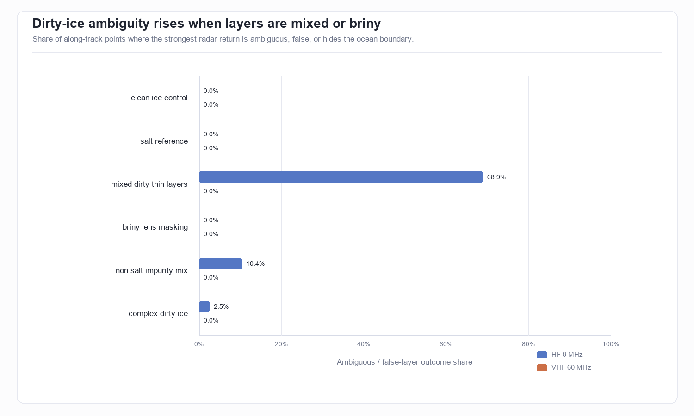
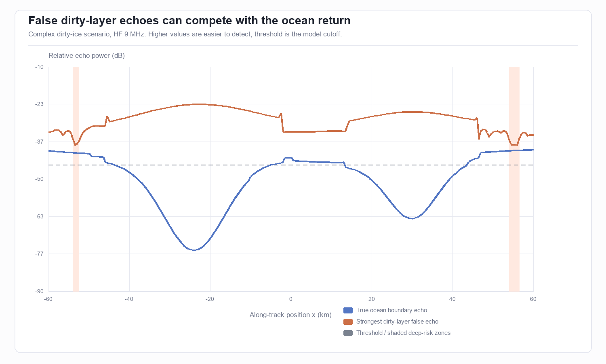
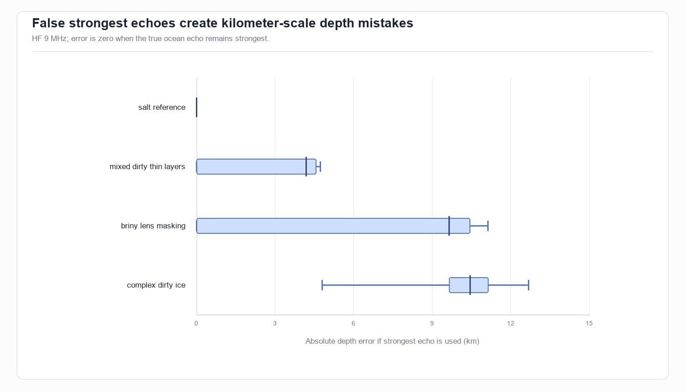
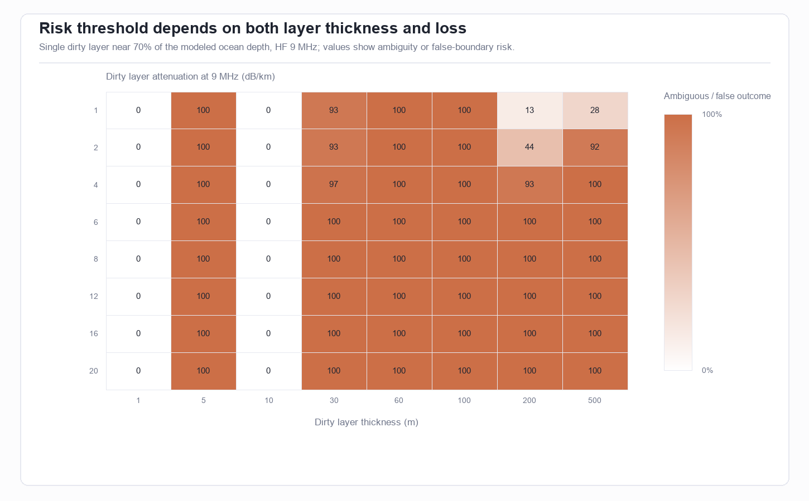
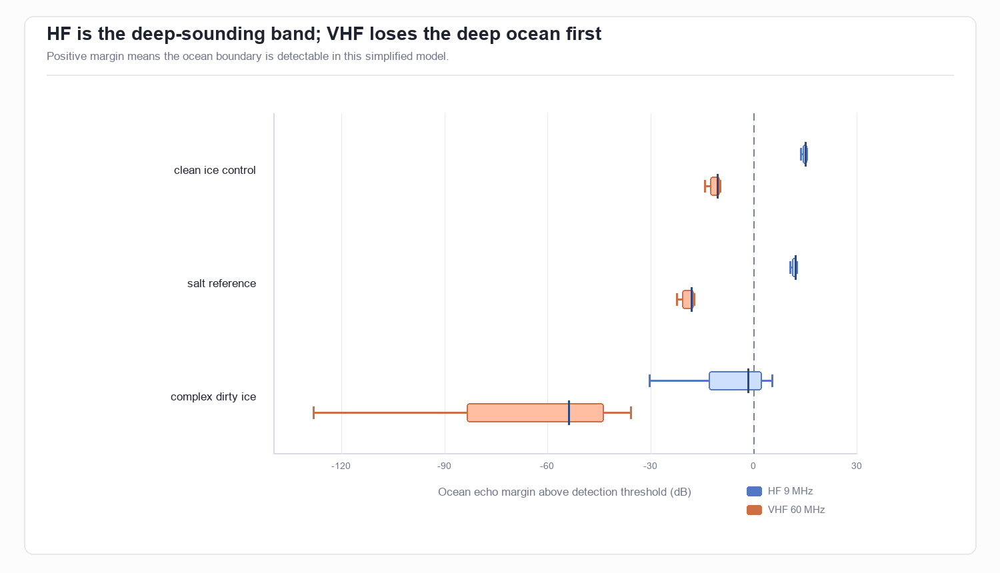

Dirty Ice Radar Simulation for Europa
Key findings with visual evidence
The best problem case is combined dirty ice, not simple salt alone. The REASON paper already treats salt layers as possible target interfaces, including meter-scale layers with permittivity around 5. This simulation matches that reference case, then adds the under-studied part: multiple dirty material types and stacked thin interfaces below radar resolution.

False dirty-layer echoes can compete with the ocean return in the complex case. The track plot compares the true ocean-boundary echo with the strongest false dirty-layer echo. Areas where the false echo approaches or exceeds the ocean echo are where interpretation becomes risky.

When a false reflector wins, the depth mistake can become kilometer-scale. This does not prove that Europa will produce those exact false layers; it shows why realistic dirty-mixture distributions are a strong student simulation target.

Dirty-layer thickness and loss both matter. Thin or weakly lossy layers are less dangerous; thick and high-loss layers can hide the ocean or make false interfaces dominate. This is the simulation space worth exploring next.

HF and VHF should not be interpreted the same way. The VHF band is higher-resolution but loses deep ocean detectability first; the HF band is the relevant deep-sounding band for the ice-ocean boundary.

Scope, data, and metric definitions
The baseline geometry comes from your current workbook model, reimplemented in Python because the latest workbook formulas do not store reliable cached values for direct reading. The track has 241 points from -60 km to 60 km and keeps your generated topography, shallow layer, briny lens, and ice-ocean boundary logic.
- Ocean echo dB: relative radar power from the true ice-ocean boundary after two-way attenuation.
- False echo dB: strongest simulated non-ocean return from dirty layers, including coherent summing of interfaces inside a radar-resolution window.
- Ambiguous / false-risk: a false echo deep enough to confuse the bottom/ocean boundary is within 3 dB of the ocean echo, stronger than it, or visible while the ocean is hidden.
- Detection threshold: -45 dB, matching the simplified threshold style already used in the workbook.
Model specification and assumptions
The model is a first-order radar interpretation stress test, not a full REASON processing pipeline. It combines interface reflectivity from dielectric contrast, one-way attenuation by material path length, and a simple coherent thin-layer interference approximation. It uses the REASON bands of 9 MHz and 60 MHz.
| Scenario | Frequency | Clear ocean | Ambiguous / false risk | Weak/no deep detection | Median ocean margin (dB) | Max inferred depth error (km) |
|---|---|---|---|---|---|---|
| briny_lens_masking | HF_9MHz | 63.5% | 0.0% | 36.5% | 4.6 | 11.13 |
| briny_lens_masking | VHF_60MHz | 0.0% | 0.0% | 100.0% | -38.0 | 11.13 |
| clean_ice_control | HF_9MHz | 100.0% | 0.0% | 0.0% | 15.2 | 0.00 |
| clean_ice_control | VHF_60MHz | 0.0% | 0.0% | 100.0% | -10.5 | 0.00 |
| complex_dirty_ice | HF_9MHz | 39.8% | 2.5% | 57.7% | -1.5 | 12.68 |
| complex_dirty_ice | VHF_60MHz | 0.0% | 0.0% | 100.0% | -53.7 | 12.68 |
| mixed_dirty_thin_layers | HF_9MHz | 31.1% | 68.9% | 0.0% | 7.9 | 4.73 |
| mixed_dirty_thin_layers | VHF_60MHz | 0.0% | 0.0% | 100.0% | -29.4 | 4.74 |
| non_salt_impurity_mix | HF_9MHz | 89.6% | 10.4% | 0.0% | 4.0 | 12.68 |
| non_salt_impurity_mix | VHF_60MHz | 0.0% | 0.0% | 100.0% | -39.5 | 12.68 |
| salt_reference | HF_9MHz | 100.0% | 0.0% | 0.0% | 12.3 | 0.00 |
| salt_reference | VHF_60MHz | 0.0% | 0.0% | 100.0% | -18.2 | 8.03 |
Cross-reference against research papers
The simulation is intentionally conservative about claims. It uses paper-backed anchors for frequencies, salt-layer permittivity, thin-layer interference, and briny/mushy high-loss behavior, then marks non-salt dirty materials as an uncertainty bracket.
| Source | What the source supports | How the simulation uses it | Status | Link |
|---|---|---|---|---|
| Blankenship et al. 2024, REASON | REASON is a dual-frequency 9/60 MHz radar and is designed to characterize brines/salts, search for an ice-ocean interface, and handle uncertainty in key Europa properties. | Model uses HF_9MHz and VHF_60MHz; dirty layers alter reflectivity/attenuation; outputs include ocean-vs-false-layer ambiguity. | Directly aligned | link |
| Blankenship et al. 2024, thin layers | Thin layers can cause constructive/destructive interference depending on thickness and permittivity; REASON considers 0.5 m and 200 m near-surface modes. | False reflector calculation coherently sums interfaces inside the radar vertical-resolution window. | Simplified forward model | link |
| Blankenship et al. 2024, salt layers | Salt layers are modeled as potential target interfaces; paper adopts epsilon=5 and meter-scale salt layers. | Salt_reference scenario uses epsilon=5, 1.0 m and 0.2 m salt layers. | Directly aligned | link |
| Blankenship et al. 2024, mushy layer | REASON is not designed to penetrate an increasingly mushy brine layer because it is highly conductive and attenuating, but the top interface becomes more reflective. | Briny_lens_masking scenario makes the lens both reflective and high-loss, then checks whether it hides the ocean echo. | Qualitatively aligned | link |
| Lalich et al. 2021 / Mars analog | Bright radar reflections under Mars polar ice can be explained by interference between multiple layer boundaries without liquid water. | Mixed_dirty_thin_layers tests whether stacked interfaces can outshine the ocean boundary in a Europa-like setup. | Analog support, not Europa proof | link |
| Pettinelli et al. 2015 review | Dielectric properties of Jovian satellite ice analogs are central to radar interpretation and remain measurement/model dependent. | Non_salt_impurity_mix varies epsilon and attenuation for less-constrained acid/dust/organic/radiolytic families. | Uncertainty bracket | link |
Limitations, uncertainty, and robustness checks
Main limitation: non-salt dirty ice is not well constrained at Europa temperatures and REASON frequencies. The model should be treated as a sensitivity tool: it tells you which combinations of layer thickness, dielectric contrast, and attenuation become dangerous, not that those exact layers exist.
- The attenuation values are scenario ranges chosen to bracket paper-backed behavior; they are not lab-measured constants for every material.
- The thin-layer interference model is simplified and does not replace full-wave electromagnetic modeling.
- The simulation assumes nadir-style sounding and does not include full spacecraft SAR focusing, clutter migration, plasma distortion, or thermal gradient physics.
- The strongest-return interpretation rule is deliberately simple; real mission interpretation will use multi-instrument and multi-pass context.
Recommended next steps
- Turn the complex dirty-ice scenario into a parameter sweep: layer count, layer spacing, dielectric constant, and attenuation.
- Add a material library for specific candidates: NaCl-rich ice, MgSO4 hydrates, sulfuric acid hydrate, dust/organics, and briny/mushy inclusions.
- Compare HF and VHF separately: HF for deep ocean detection, VHF for shallow false-reflector discrimination.
- Use the claim: mixed dirty ice could create ambiguous radar signatures that hide or mimic the true ice-ocean boundary under some layer configurations.
Further questions
The next research question should be: which realistic material mixture produces the highest false-reflector risk while still being plausible for Europa? That will need more lab-property values than the public mission summary gives.